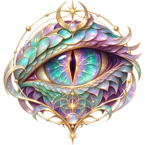

Meet Your Dragon Guide
A gentle first door into dragon work.
60 min$97
Through a guided journey, you'll meet the dragon guide who walks with you, receive its message, and learn how to call on it when you need strength or clarity. If it serves you, we'll pull a tarot card together to help you understand what your guide is showing you.
This is for you if you've felt a pull toward dragon energy and want to know who's there, or if you're new to this work and want a grounded place to begin.
Book this session